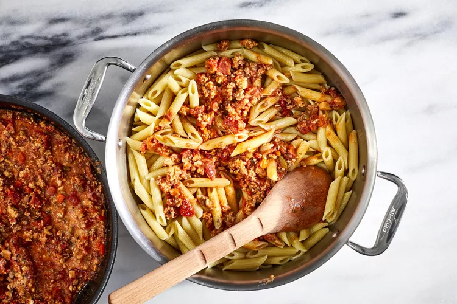

Pasta Bolognese
Yield: 4 to 6 servings

Our Bolognese pasta features a traditional combination of ground beef, pork, veal, and tomato studded with salt-cured pancetta. It's tossed with penne rigate and served with freshly grated Parmesan cheese.
Bolognese isn't your typical tomato-based spaghetti sauce. It originated in Bologna, Italy, and is a hearty ragù that starts with a soffritto — that all-important blend of finely diced onion, carrot, and celery — loaded up with a variety of ground meats and cooked with white wine. Then, a relatively small amount of tomatoes are added along with stock; the sauce is cooked slow and low to develop and concentrate the flavors. To finish, it's enriched with a touch of cream.
Ingredients
- 1/4cup extra-virgin olive oil, divided
- 1 medium onion, finely diced
- 1 medium carrot, finely diced
- 1 medium celery rib, finely diced
- 2 ounces pancetta, thickly sliced, finely diced
- 1/2pound ground beef
- 1/2pound ground veal
- 2 garlic cloves, chopped
- 1 (28-ounce) can peeled Italian tomatoes, seeded and finely chopped, juices reserved
- 1 cup chicken stock or canned low-sodium broth
- 1/2teaspoon dried thyme
- Freshly grated Parmesan cheese, for serving
Preparation
- Heat 1 tablespoon of the olive oil in a large, heavy saucepan until shimmering. Add the onion, carrot, celery, and pancetta and cook over moderate heat, stirring occasionally, until the vegetables are softened but not browned, about 8 minutes. Scrape the vegetable mixture into a large bowl.
- Add the remaining 3 tablespoons of olive oil to the saucepan and heat until just shimmering. Add the beef, veal and cook over moderately high heat until just barely pink, about 5 minutes.
- Return the vegetable mixture to the saucepan. Add the garlic and cook over high heat until fragrant, about 1 minute.
- Add the wine and cook, stirring occasionally, until almost evaporated, about 8 minutes.
- Stir in the tomatoes and their juices, the chicken stock, thyme, and bay leaf. Season with a generous pinch of salt and pepper and bring to a boil over high heat.
- Cover partially and cook over moderately low heat for 1 hour. Discard the bay leaf. Stir in the heavy cream and cook the sauce just until heated through.
- Meanwhile, in a large pot of boiling salted water, cook the pasta until al dente.
- Drain well, return to the pot, add the sauce, and toss.
- Serve the pasta in deep bowls and pass the Parmesan at the table.